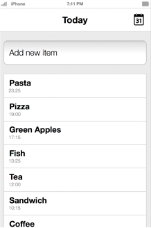
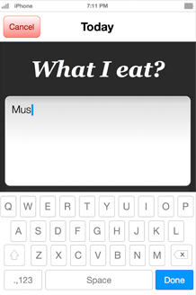
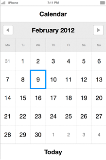
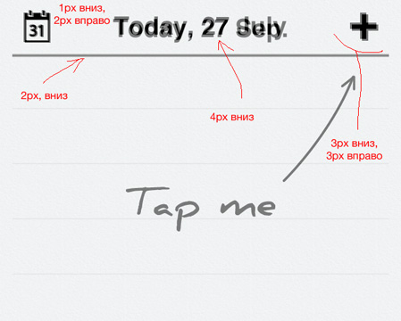
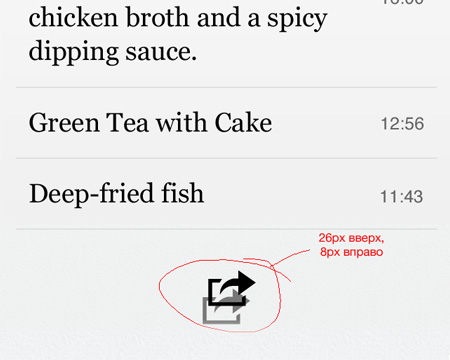

What I Eat
Simplest way ever to track your eating habits
 Exactly what I was looking for
by Jacqueline Ionescu
Exactly what I was looking for
by Jacqueline Ionescu
Idea
A tool that simplifies meal-tracking. Easy-to-use, with the mostessential features.
Debating our ideas
-
The first release version is going to be instantly usable, and capable of expansion. We believe it is best to roll out an attractive, user-friendly app.
There should be a calendar on which daily meals can be recorded. Need to check and
-
compare meals or just to share them? Now it’s as easy as pie.
The format chosen for meal tracking is also important. With our app, users can quickly add anything to their daily records.
Prototyping
-

Main Screen
Our app is all about listing things in a comfortable way. Thus, the core part is the main screen, which was prototyped first.
-

Adding your meal
After the opening screen of the app was ready, we looked at prototyping how to enter meals. We believed that adding meals should be fast and efficient.
-

Calendar control
The calendar was the next step. It had to be as user-friendly as possible. Records posted had to be able to be checked simply by clicking on the date in the calendar.
design
After the prototype screens were decided on, we took the next step and started designing them.
Our user interface is text-based. We wanted our fonts to look neither garish nor plain. We felt the combination of the sans-serif Helvetica for the time and header and serif Georgia for the meals was perfect.
The final touch is to assess animation during screen changes.
testing
Once we have tested the implementation on iPhones, adjustments will be made so that the app meets all of our expectations.
- 
- 
icon
The application icon is one of the most attention-grabbing parts of the app. We wanted it to stand out among the others in the AppStore. Our friends from Loggia helped us to do that.
Out of these we picked #6 as the one that most reflected the function of the what-i-eat app. We also reduced the number of the items on the tray to a folk, a knife and a plate.
Final icon
The great initial sketch did not work as an icon for an iPhone app. However, a brainstorming session led us to a salmon steak which you can see below.
Preparation
for AppStore
While submitting an application to the AppStore, an iOS developer needs not only to promote the application binary, but also to submit things like an application description and the application screens. These will define the appearance of the app in iTunes.
We wanted to have application screens which depicted the way the app would be used that we envisioned from the very beginning. We produced pictures of the app with meals in the background.